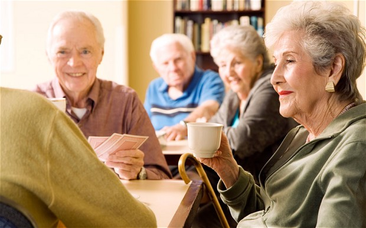

ElderlyPeople at home
Creado por el grupo JODIMI.
Benvingut

Accedir
¿Qué es ElderlyPeople?
Programa dirigit a millorar les condicions de vida de les persones majors que romanguen en el seu domicili, facilitant-los els servicis bàsics: el menjar diària, el llavat de roba de llit i bany, així com la neteja de la llar, la qual cosa contribuïx de forma decisiva a millorar la seua salut, benestar i qualitat de vida..
'objectiu és facilitar a les persones majors la permanència en el seu domicili i/o entorn familiar i social el major temps possible.
El programa social “Major a casa” comprén un conjunt de servicis i subministraments relacionats entre si que es presten de manera coordinada i contínua en el domicili de l'usuari En el mes natural. Estos servicis són:
sanitat
,
menjar a domicili
,
neteja
,
altrescom acompanyament, companyia, ...